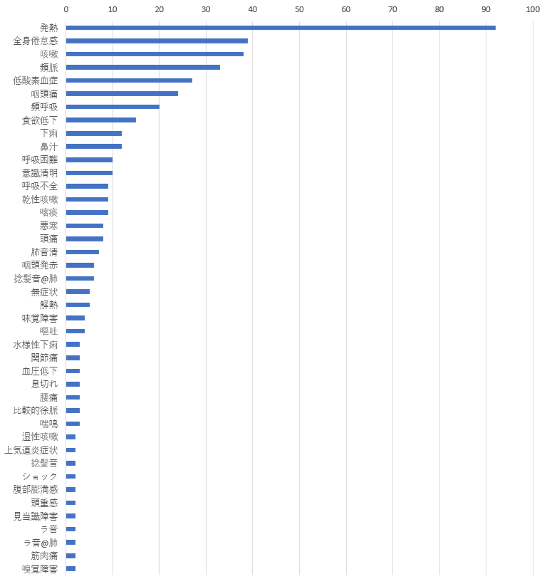

更新履歴
| 2021. 6. 6 | 海外安全情報追加 |
| 2021. 6. 1 | ワクチン接種率ランキング追加 |
| 2021. 5.31 | ワクチン接種状況追加 |
| 2021. 1.10 | 速報値削除、重傷者と対応病床数比較可能に変更、国内感染者の初期症状追加 |
| 2020.10.15 | URL変更、病床数更新 |
| 2020. 7. 6 | 重症者数追加 |
| 2020. 5.17 | 自衛隊中央病院の感染予防動画追加 |
| 2020. 5.16 | 検査数/陽性率/医療病床/宿泊施設 表記、年代別集計/陽性者数の推移閉鎖 |
| 2020. 5.14 | 民間企業の取り組み追加 |
| 2020. 5. 6 | 自治体の更新履歴表示 |
| 2020. 5. 4 | 18都道府県速報値に変更 |
| 2020. 5. 3 | オンライン診療マップリスト追加 |
| 2020. 4.23 | 計算手法変更、更新履歴書式変更 |
| 2020. 4.19 | PCR検査実施件数をlog表記に変更、参考画像／動画追加 |
| 2020. 4.18 | 年代別集計仕様変更 |
| 2020. 4.17 | 都道府県別集計閉鎖、グラフ表示変更 |
| 2020. 4.15 | 感染密度を現患者の密度に変更、地域分析追加 |
| 2020. 4.12 | 世界の感染状況閉鎖、国内感染者数統計追加 |
| 2020. 4.11 | 国内感染者数、関連リンク修正 |
| 2020. 4. 5 | 全国クラスターマップ追加 |
| 2020. 3.29 | メニューボタン追加 |
| 2020. 3.25 | 感染動態という形を捉えるWEBに仕様変更 |
| 2020. 3.20 | 陽性患者の推移追加 |
| 2020. 3.18 | PCR検査数と陽性者数の推移追加 |
| 2020. 3.15 | クルーズ船事例、季節性インフルエンザ統計追加、日本、世界情勢追加 |
| 2020. 3.12 | サイト仕様変更 |
| 2020. 3. 7 | 国内感染者数、世界の感染状況追加 |
| 2020. 3. 2 | 最新情報に更新 |
| 2020. 3. 1 | 本WEB公開 |
ワクチン接種率
ワクチンの接種率（医療従事者除く）です。医療従事者を含むデータは、新型コロナワクチンについて、首相官邸ホームページ を参照してください。
出典
・新型コロナワクチンの接種状況（高齢者等）
・covid19vaccine by Code for Fukui
・日本の都道府県別人口推計 by Code for Fukui
国内の感染者数
最終更新：陽性率は、１週間の平均値と直近の陽性率を計算し、７％以上か否かで色分けしているよ。
病床数との比較は、入院患者と病床数（宿泊施設含む）を比較しリスク度を色分けしたよ。赤くなるほど、リスクが高いってことね。
感染密度は、人口10万人あたりの現患者数を表示しているぞ。赤くなるほど、感染の広がりが大きい地域ということじゃな。
出典
病床数は療養状況等及び入院患者受入病床数等に関する調査について を参照し、人口統計はe-Stat 政府統計の総合窓口 を参照しました。
地域分析
上記の国内感染者数は、県ごとに病床数や感染密度を比較してたけど、これを応用し市町村ごとの地域分析をしてみよう。
①陽性者の感染密度又は現患者の感染密度を選択します。
②お住まいの都道府県を選択します。
③お住まいの市町村の人口（単位：万人）を入力します。
④計算するボタンを押します。
これにより、感染密度に基づく、平均感染者数（理論値）が計算されるよ。実際の感染者数を自治体のウェブサイトから調べてみてね。
もし、実際の感染者数の方が多かった場合、県内でその市町村は感染の広がりが速く、県の対策だけではなく、市町村独自の対策（より厳しいもの）が必要ということになるのじゃ
県というマクロな視点から、市町村というミクロな視点にクローズアップすることができるんじゃな。
この計算手法はさらに応用が可能だよ。
自分の地域だけではなく隣接する市町村を調べて、感染の広がりが速かった場合、自分の市町村にも広がってくるかもしれないと、早めの対策を打てるよ。
陽性者の感染密度と現患者の感染密度の平均感染者数（理論値）を比べて大差ない場合、退院の患者が少ないため、その地域は医療機関への圧迫の懸念があるってことだじゃな。
潜在的な感染者もいるかもしれないため、正確ではない可能性もあるけど、一つの指標にはなるよね。
さて、皆さんのお住まいの地域はどうなっているでしょうか？
目に見えない難敵を「見える化」しましょう！仁志.
オンライン診療医療機関
- 北海道
- 青森
- 岩手
- 宮城
- 秋田
- 山形
- 福島
- 茨城
- 栃木
- 群馬
- 埼玉
- 千葉
- 東京
- 神奈川
- 新潟
- 富山
- 石川
- 福井
- 山梨
- 長野
- 岐阜
- 静岡
- 愛知
- 三重
- 滋賀
- 京都
- 大阪
- 兵庫
- 奈良
- 和歌山
- 鳥取
- 島根
- 岡山
- 広島
- 山口
- 徳島
- 香川
- 愛媛
- 高知
- 福岡
- 佐賀
- 長崎
- 熊本
- 大分
- 宮崎
- 鹿児島
- 沖縄
厚生労働省のオンライン診療リスト の加工データを用いて、マップ及びリストにしました。お住まいの地域の医療機関を調べてみてください。
（出典：全国のオンライン診療実施医療機関リスト ）
民間企業の取り組み
新型コロナウイルス対策に取り組んでいる民間企業の方々の取り組みを掲載しています。各企業様のウェブサイトの利用規約に準拠し、個別に掲載の許諾を頂きました。
この場をお借りして、感謝申し上げます。ありがとうございました。仁志.
感染者の初期症状
国内の感染者の初期症状です。
出典：COVID-19症例データベース、日本医師会 COVID-19有識者会議
海外安全情報
出典
・海外安全情報オープンデータ 、外務省
関連情報
参考画像／動画
感染防止動画
自衛隊中央病院の感染防止動画です。
関連リンク
 新型コロナウイルス対策ダッシュボード
新型コロナウイルス対策ダッシュボード  #民間支援情報ナビ
#民間支援情報ナビ {kind=link}
{kind=link}
{kind=link}
参考文献
ＱＲコード
本ＷＥＢのＱＲコードです。QRコードは（株）デンソーウェーブの登録商標です。
※個人で開発したWEBです。正確な情報は厚生労働省のウェブサイト等をご参照ください。
※ライセンスは、CC BY 3.0 で公開しています。
※リンク先のウェブサイトについては、リンク先の著作権・知的所有権に帰属しますので、ご注意ください。
取材の依頼など、お問い合わせはこちらからお願いいたします！